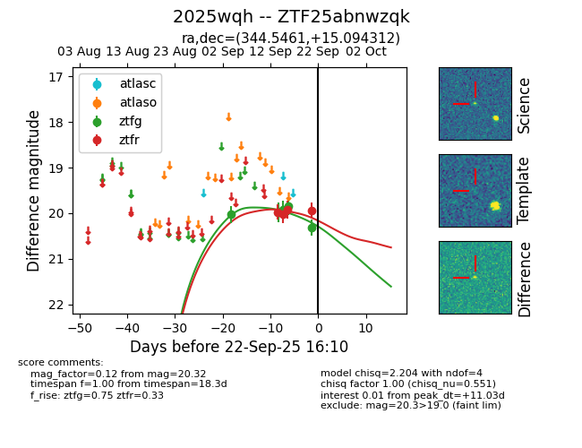
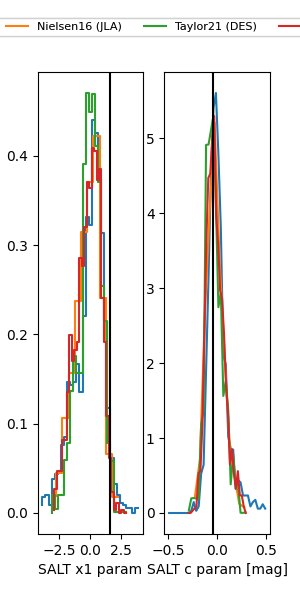

FINK: ZTF25abnwzqk
Lasair: ZTF25abnwzqk
ALeRCE: ZTF25abnwzqk
TNS: 2025wqh
YSE: 2025wqh
ZTF25abnwzqk (ztf,fink)
2025wqh (tns,yse)
equatorial (ra, dec) = (344.5461,+15.09431)
galactic (l, b) = (86.4535,-39.62361)


last ztfg=20.32, ztfr=19.94
5 ztfg, 4 ztfr detections